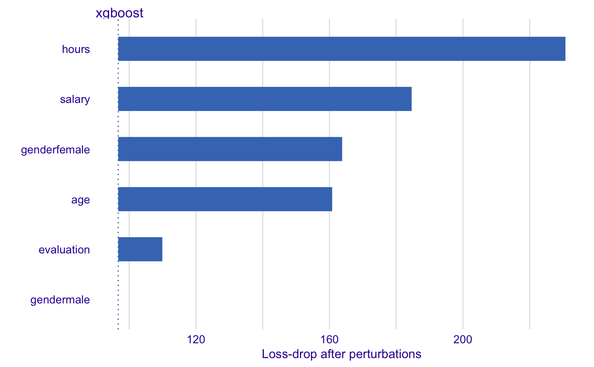
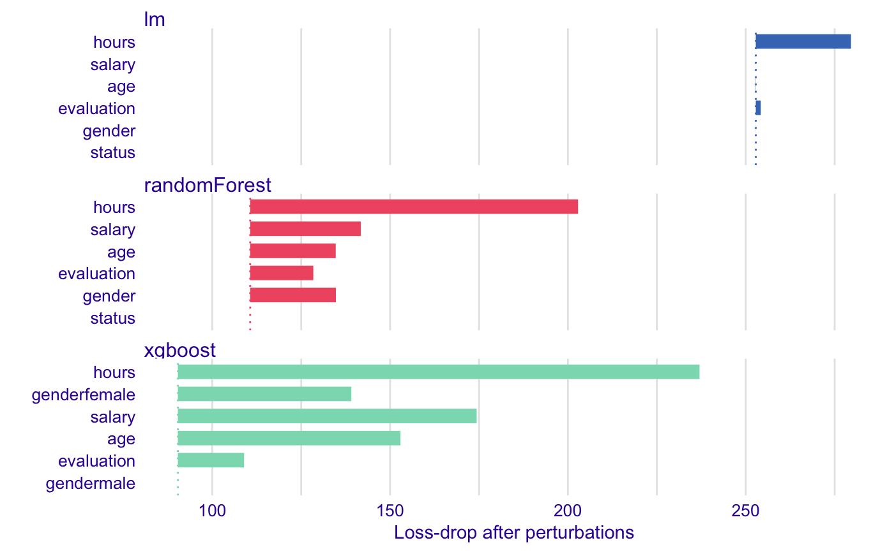
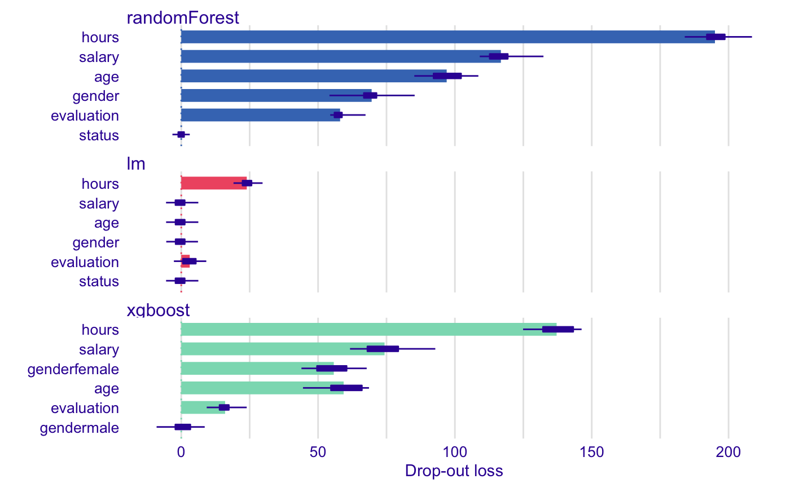

Plots Global Model Explanations (Variable Importance)
Function plot.variable_dropout_explainer plots dropouts for variables used in the model.
It uses output from variable_dropout function that corresponds to permutation based measure of variable importance.
Variables are sorted in the same order in all panels. The order depends on the average drop out loss. In different panels variable contributions may not look like sorted if variable importance is different in different in different mdoels.
# S3 method for variable_importance_explainer plot(x, ..., max_vars = 10, bar_width = 10, show_baseline = FALSE, desc_sorting = TRUE)
Arguments
| x | a variable dropout exlainer produced with the 'variable_dropout' function |
|---|---|
| ... | other explainers that shall be plotted together |
| max_vars | maximum number of variables that shall be presented for for each model |
| bar_width | width of bars. By default 10 |
| show_baseline | logical. Should the baseline be included? |
| desc_sorting | logical. Should the bars be sorted descending? By default TRUE |
Value
a ggplot2 object
Examples
library("breakDown") library("randomForest") HR_rf_model <- randomForest(status == "fired"~., data = HR, ntree = 100)#> Warning: The response has five or fewer unique values. Are you sure you want to do regression?explainer_rf <- explain(HR_rf_model, data = HR, y = HR$status == "fired") vd_rf <- variable_importance(explainer_rf, type = "raw")#> Warning: Please note that 'variable_importance()' is now deprecated, it is better to use 'ingredients::feature_importance()' instead. #> Find examples and detailed introduction at: https://pbiecek.github.io/PM_VEE/variableImportance.htmlhead(vd_rf)#> variable dropout_loss label #> 1 _full_model_ 124.9131 randomForest #> 2 status 124.9131 randomForest #> 3 evaluation 141.8110 randomForest #> 4 gender 152.4473 randomForest #> 5 salary 154.3866 randomForest #> 6 age 156.1831 randomForestplot(vd_rf)HR_glm_model <- glm(status == "fired"~., data = HR, family = "binomial") explainer_glm <- explain(HR_glm_model, data = HR, y = HR$status == "fired") logit <- function(x) exp(x)/(1+exp(x)) vd_glm <- variable_importance(explainer_glm, type = "raw", loss_function = function(observed, predicted) sum((observed - logit(predicted))^2)) head(vd_glm)#> variable dropout_loss label #> 1 _full_model_ 261.1544 lm #> 2 gender 261.1489 lm #> 3 status 261.1544 lm #> 4 salary 261.1851 lm #> 5 age 261.1935 lm #> 6 evaluation 263.3490 lmplot(vd_glm)library("xgboost")#> Warning: package ‘xgboost’ was built under R version 3.5.2model_martix_train <- model.matrix(status == "fired"~.-1, HR) data_train <- xgb.DMatrix(model_martix_train, label = HR$status == "fired") param <- list(max_depth = 2, eta = 1, silent = 1, nthread = 2, objective = "binary:logistic", eval_metric = "auc") HR_xgb_model <- xgb.train(param, data_train, nrounds = 50) explainer_xgb <- explain(HR_xgb_model, data = model_martix_train, y = HR$status == "fired", label = "xgboost") vd_xgb <- variable_importance(explainer_xgb, type = "raw") head(vd_xgb)#> variable dropout_loss label #> 1 _full_model_ 90.02547 xgboost #> 2 gendermale 90.02547 xgboost #> 3 evaluation 103.56042 xgboost #> 4 age 146.98035 xgboost #> 5 genderfemale 153.27859 xgboost #> 6 salary 176.31511 xgboostplot(vd_xgb)plot(vd_rf, vd_glm, vd_xgb, bar_width = 4)# NOTE: # if you like to have all importances hooked to 0, you can do this as well vd_rf <- variable_importance(explainer_rf, type = "difference") vd_glm <- variable_importance(explainer_glm, type = "difference", loss_function = function(observed, predicted) sum((observed - logit(predicted))^2)) vd_xgb <- variable_importance(explainer_xgb, type = "difference") plot(vd_rf, vd_glm, vd_xgb, bar_width = 4)